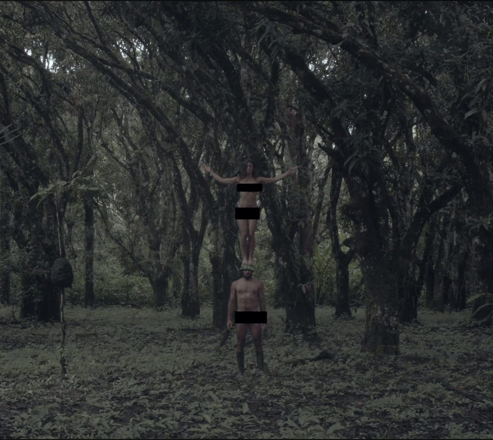
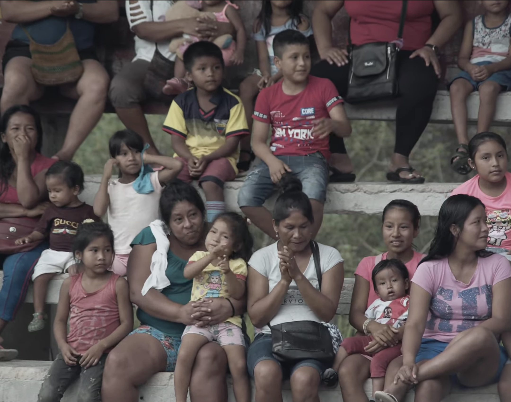
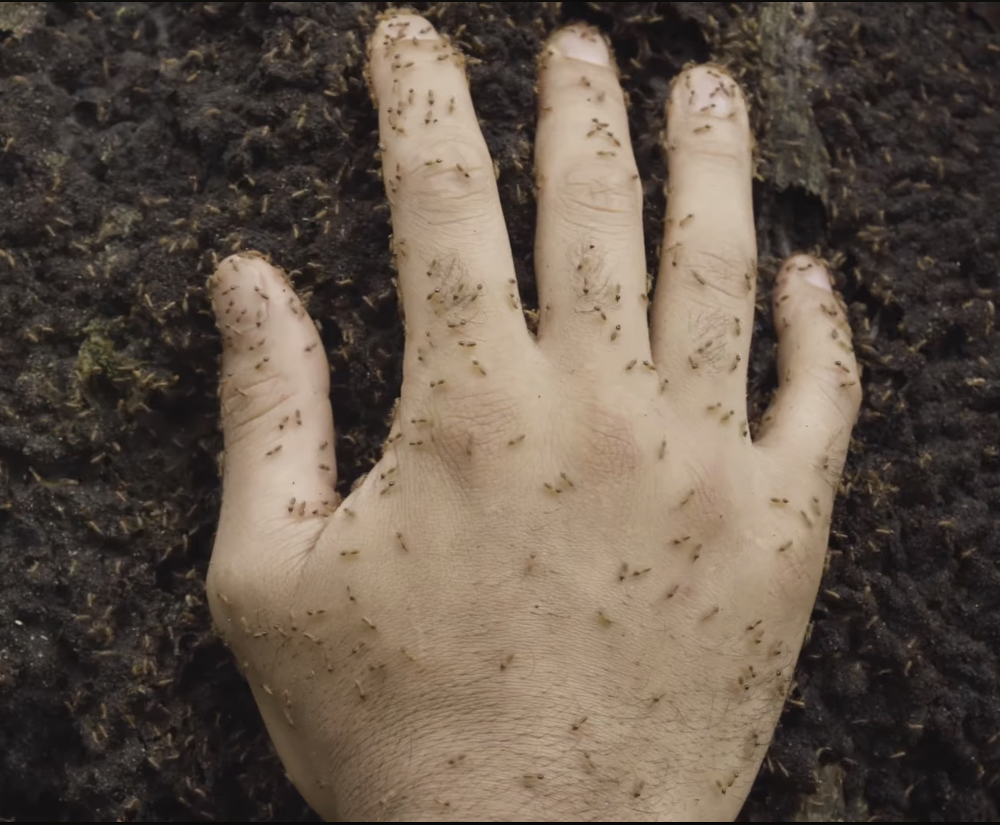

Short documentary / France-Peru
HUELLA
This page presents Huella as a documentary shaped through artistic immersion in the Peruvian Amazon. It helps partners, programmers and collaborators quickly understand the film’s trajectory, its hybrid artistic approach, and its commitment to making visible Amazonian peoples, territories and struggles.
Synopsis
The inspiration comes from Herzog’s quest in his “conquest of the useless,” both his own and that of his character Fitzcarraldo. The documentary Huella allows itself an unpretentious search for what was missing in the majestic landscapes of pure nature. A performance project conceived and developed by Justine Bertignon and Mosi Espinoza, who invited filmmaker Robson Dias to accompany their creative process as it confronts its original source of inspiration: the Peruvian Amazon rainforest.
Project trajectory
- World premiere at FIFAC – Amazonia and Caribbean International Documentary Film Festival, 2024
- Screened in the Écrans Parallèles section
- Directed by Mosi Espinoza and Justine Berthillot
- Edited by Clement Fessy and Mosi Espinoza
- Cinematography by Robson Dias
- Sound recording by Mauricio Espinoza
- Created during the tour of the stage performance in the Peruvian Amazon
- An art-documentary weaving together reality and imagination, bodies and voices, the Amazon forest and the artistic universe
- A film committed to amplifying Amazonian peoples and their political, ecological and spiritual struggles
Why this page matters
This page presents Huella as a documentary shaped through artistic immersion in the Peruvian Amazon. It helps partners, programmers and collaborators quickly understand the film’s trajectory, its hybrid artistic approach, and its commitment to making visible Amazonian peoples, territories and struggles.


